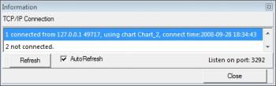

Menu Visualizza
{kind=link}
A pieno schermo
Ridimensiona la finestra di CdC a pieno schermo. Le barre di stato, degli strumenti, di scorrimento e del menu contiunuano ad essere visualizzate. Un ulteriore click su questa voce ripristina la finestra alle dimensioni precedenti. Il tasto funzione F11 funziona allo stesso modo.
Visione Notturna
Un click su questa voce cambia il colore della cartina da normale a visione notturna e viceversa:
schermo nero, tonalità di rosso per la griglia, le etichette e le altre linee, mentre le icone e le barre strumenti sono visualizzate come impostato in Configurazione -> Mostra -> Colore.
In Windows Vista lo sfondo diventa grigio anziché nero.
Pannelli
Mostra un sottomenu con queste voci:
- Tutti i pannelli abilita o disabilita la visualizzazione di tutti i pannelli, tranne la barra menu (scorciatoia da tastiera Ctrl+B).
- Pannello Principale abilita o disabilita la visualizzazione del pannello pulsanti sotto la barra menu.
- Pannello Oggetti abilita o disabilita la visualizzazione del pannello pulsanti sotto la barra menu.
- Pannello Sinistro abilita o disabilita la visualizzazione del pannello pulsanti di sinistra.
- Pannello Destro abilita o disabilita la visualizzazione del pannello pulsanti di destra.
- Bara di Stato abilita o disabilita la visualizzazione della barra di stato in basso alla cartina.
Barre di scorrimento
Abilita o disabilita la visualizzazione delle barre di scorrimento per muovere la cartina. E' possibile muovere la cartina anche con Shift+Tasto sinistro del mouse e movimento del mouse o con i tasti freccia e i tasti Ctrl, Shift o Alt per scegliere la velocità.
Informazioni server
 Mostra le connessioni attive del server TCP/IP di Skychart, è possibile aggiornare manualmente la schermata o selezionare “Auto aggiornamento”.
{kind=link}
E' anche possibile terminare una connessione con un click destro del mouse su una linea.
Orologio
 Apre una finestra con le informazioni sul tempo. Vengono visualizzati i seguenti elementi:
Apre una finestra con le informazioni sul tempo. Vengono visualizzati i seguenti elementi:
- Ora legale del fuso orario corrente.
- Tempo Universale.
- Ora locale media per la longitudine corrente.
- Ora solare reale basata sull'angolo orario apparente del Sole.
- Tempo siderale locale.
- Data giuliana
Imposta FOV
Dalla finestra di dialogo che appare è possibile impostare il campo visivo in maniera dinamica spostando un cursore. Se si vuole invece impostare un FOV preciso è possibile farlo da Visualizza → Posizione.
Aumenta Ingrandimento
Dimezza il campo visivo corrente. Il pulsante Aumenta ingrandimento nel pannello pulsanti ha lo stesso effetto. E' anche possibile modificare il campo visivo con la rotella del mouse.
Diminuisci Ingrandimento
Raddoppia il campo visivo corrente. Il pulsante Diminuisci ingrandimento nel pannello pulsanti ha lo stesso effetto. E' anche possibile modificare il campo visivo con la rotella del mouse.
Posizione
Imposta o legge i parametri di posizione del centro della cartina. La posizione può essere espressa in differenti sistemi di coordinate. Qui è anche possibile impostare i parametri di FOV o di rotazione della cartina corrente. Vedi qui per maggiori dettagli.
Lista Oggetti
Apre una finestra dove sono elencati tutti gli oggetti visualizzati nella cartina corrente oltre alle stelle.
Immagine lampeggiante
Ha lo stesso effetto della relativa icona presente nel gruppo immagini della barra degli oggetti.
Quando si ha un'immagine DSS caricata è possibile visualizzarla in maniera lampeggiante tramite questa opzione. Se non si hanno immagini caricate questa opazione non ha effetti.
Per maggiori informazioni su come aprire un'immagine DSS da una sorgente locale vedi qui.
Per maggiori informazioni su come scaricare un'immagine dall'Online Digital Sky Survey (DSS) vedi qui.
Per maggiori informazioni sulla visualizzazione di queste immagini vedi qui.
Per maggiori informazioni sulla configurazione delle risorse DSS per lo scarico delle immagini vedi qui.
Colore di fondo cielo
Ha lo stesso effetto della relativa icona presente nel gruppo sovrimpressioni della barra degli oggetti.
Quando la cartina è configurata per usare il sistema di coordinate Alt/Az e l'impostazione del colore di fondo cielo è impostato in automatico, è possibile che lo sfondo risulti chiaro.
Questo succede quando il Sole è più alto di -18° sull'orizzonte (di giorno o quando non è ancora raggiunto il crepuscolo astronomico). In questo caso questa funzione permette di passare da un colore di fondo fisso (di solito nero) al colore automatico impostato a seconda delle opzioni.
Per effettuare cambiamenti al colore automatico o fisso vedi in Configurazione -> Mostra -> Colore del cielo.
Se non si è impostato il colore del cielo in automatico E non si usa il sistema Alt/Az il colore di fondo cielo sarà fisso. In tali condizioni questa funzione non ha effetti.